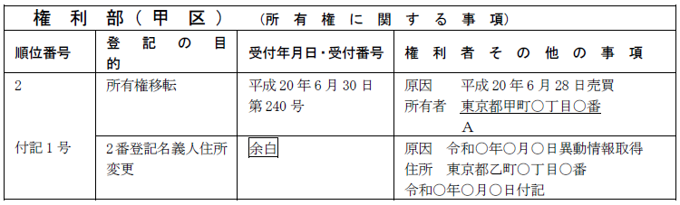

第１編 各 論
第７章 登記名義人の氏名変更等
第２節 所有権登記名義人の住所等変更登記の義務化
所有権の登記名義人の氏名若しくは名称又は住所について変更があったときは、当該所有権の登記名義人は、その変更があった日から2年以内に、氏名若しくは名称又は住所についての変更の登記（以下、「住所等変更登記」とする。）を申請しなければならない（不登法76条の5）。
所有者不明土地等の解決及び発生の予防のために規定された。
1. 対象
「所有権の登記名義人」の住所等変更登記が対象である。
施行日（令和8年4月1日）より前の住所等の変更も対象となる。
2. 期間
施行日後の住所等の変更：変更があった日から2年以内
施行日前の住所等の変更：施行日から2年以内（改正法附則5条7項）
1. 意義
登記官は、所有権の登記名義人の氏名若しくは名称又は住所について変更があったと認めるべき場合として法務省令で定める場合（下記(1)又は(2)）には、法務省令で定めるところにより、職権で、氏名若しくは名称又は住所についての変更の登記をすることができる（「スマート変更登記」、不登法76条の6本文）。
住所等変更登記の義務化による所有権の登記名義人の負担の過度な増加を考慮して規定されたものである。
(1) 不登規158条の45第6項の規定による通知があった場合
代表登記所の登記官は、住基ネット情報により、所有権の登記名義人の氏名又は住所について変更があったことを確認した場合には、当該所有権の登記名義人に対し、その旨及び当該所有権の登記名義人が検索用情報申出（不登法76条の6ただし書）をすることができる旨を通知（意思確認通知）することができ（不登規158条の45第1項）、意思確認通知を受けた所有権の登記名義人は、当該通知の送信又は送付の日から1か月以内に、代表登記所の登記官に対し、検索用情報申出（不登法76条の6ただし書）をすることができる（不登規158条の45第3項）。
そして、代表登記所の登記官は、上記の申出を受けたときは、当該申出に係る不動産の所在地を管轄する登記所に、その旨及び当該所有権の登記名義人の氏名又は住所の変更についての登記をする場合に記録すべき事項（ローマ字氏名及び旧氏に関する事項を含む。）を通知することができる（不登規158条の45第6項）。
(2) 会社法人等番号が登記された所有権の登記名義人の法人の登記簿に記録された情報の提供を受けてその名称又は住所について変更があったことを確認した場合
2. 対象
登記官が職権ですることができるのは、「所有権の登記名義人」の氏名若しくは名称又は住所についての変更の登記である。所有権の登記名義人であれば、自然人も法人も対象となる。
(1) 自然人
所有権の登記名義人が自然人であるときは、住所等変更登記によって住所等を公示するのが望ましくないケースもあるため、本人の申出（検索用情報申出）があるときに限って、職権でスマート変更登記がなされる（不登法76条の6ただし書）。
(2) 法人
法人については、会社法人等番号の登記がされていれば、スマート変更登記の対象となる。
所有権の登記名義人が法人であるときは、法人識別事項が登記事項となるため（不登法73条の2第1項第1号）、会社法人等番号が法人識別事項として登記されている法人は、申出がなくてもスマート変更登記の対象となる。
また、法人識別事項の規定の施行前に登記された法人も、法人識別事項の申出をすることによって、スマート変更登記の対象となる。
会社法人等番号を有しない法人は、法務局側で住所等の変更の事実を確認することができないため、スマート変更登記の対象とならない。そのため、所有権の登記名義人である会社法人等番号を有しない法人の住所等に変更が生じた場合には、住所等変更登記を申請しなければならない。
3. 登記官の検索の方法
(1) 自然人
登記官は、あらかじめ所有権の登記名義人からその生年月日等の検索用情報の申出を受けた上で、これを検索キーとして、定期的に住民基本台帳ネットワークシステム（以下「住基ネット」という。）に照会して、住所等に変更がないかを確認し、その結果、住所等に変更があったと認められる場合には、所有権の登記名義人の了解を得た上で、職権により変更登記をする（令7.3.28法務省「住所等変更登記の義務化の施行に向けたマスタープラン」）。
(2) 法人
会社法人等番号を検索キーとして、商業・法人登記システムから不動産登記システムに対し、法人の名称又は住所の変更情報を速やかに通知し、登記官は、当該通知により所有権の登記名義人の住所等の変更を把握して、職権で変更登記をする（令7.3.28法務省「住所等変更登記の義務化の施行に向けたマスタープラン」）。
4. スマート変更登記の効果
所有権の登記名義人は、登記官の職権でスマート変更登記がされれば、住所等変更登記の申請義務を履行したものと扱われる。
5. スマート変更登記の方法
登記官は、職権による住所等変更登記をするときは、所有権の登記に付記する方法によって、登記の目的、登記原因及びその日付並びに登記の年月日を登記記録に記録する（不登規158条の44第2項）。
登記原因は自然人・法人ともに「異動情報取得」である（令8.3.27民二525）。
登記原因日付は、自然人の場合は代表登記所の登記官が住基ネット情報の提供を受けた日であり、法人の場合は会社法人等番号が登記された所有権の登記名義人の法人の登記簿に記録された情報の提供を受けて、その名称又は住所について変更があったことを確認した日である（令8.3.27民二525）。
【職権による住所変更登記の記録例】 （令8.3.27民二525）

1. 検索用情報の申出の方法
所有権に関する登記の申請と同時にすること（検索用情報同時申出。不登規158条の39第1項）も、申出のみをすること（検索用情報単独申出。不登規158条の40第1項）もできる。
2. 検索用情報同時申出
所有権の保存若しくは移転の登記、合体による登記等（法49条1項後段の規定により併せて申請をする所有権の登記があるときに限る。）又は所有権の更正の登記（その登記によって所有権の登記名義人となる者があるときに限る。）を申請する場合において、所有権の登記名義人となる者（これらの登記の申請人である場合に限る。）が国内に住所を有するときは、これらの登記の申請人は、登記官に対し、当該所有権の登記名義人となる者についての「検索用情報」を申請情報の内容として申し出るものとする（不登規158条の39第1項）。
(1) 検索用情報
ⅰ 氏名
ⅱ 氏名の振り仮名（日本の国籍を有しない者にあっては、氏名の表音をローマ字で表示したもの）
ⅲ 住所
ⅳ 出生の年月日
ⅰからⅳは、いずれも住民票に記載又は記録されたものを意味する（令7.3.3民二373）。
ⅱ及びⅳを証する市町村長その他の公務員が職務上作成した情報（以下「出生の年月日等を証する情報」という。）を提供しなければならない（不登規158条の39第2項）。もっとも、検索用情報同時申出は所有権に関する登記と同時にすることから、当該登記申請で提供する所有権の登記名義人となる者の住所証明情報と兼ねることができる（令7.3.3民二373）。
また、電子申請の申請人が検索用情報同時申出をする場合において、その者がⅱ及びⅳを確認することができる電子証明書を提供したときも、出生の年月日等を証する情報の提供に代えることができる（不登規158条の39第3項）。
ⅴ 電子メールアドレス
登記官が職権で住所等変更登記をする場合に、所有権の登記名義人に対して了解を得るための連絡をする際にメールアドレスが必要となる（令7.3.3民二373）。
なお、所有権の登記名義人となる者がこれを有しない場合において、「電子メールアドレスなし」の振り合いによりその旨を申請情報の内容としたときは、当該事項の申出をしないこととして差し支えない（令7.3.3民二373）。
【検索用情報同時申出をする場合の登記申請書記載例】
※外国人のローマ字氏名は、申請人の氏名に括弧を付して記録し、これを登記申請に伴うローマ字氏名併記の申出（不登規158条の31第1項）としても取り扱う（令7.3.3民二373）
3. 検索用情報単独申出
国内に住所を有する所有権の登記名義人は、登記官に対し、当該所有権の登記名義人についての検索用情報を検索用情報管理ファイルに記録するよう申し出ることができる（不登規158条の40第1項）。
(1) 検索用情報単独申出で明らかにしなければならない事項
検索用情報単独申出は、次に掲げる事項を明らかにしてしなければならない（不登規158条の40第2項）。
ⅰ 所有権の登記名義人の検索用情報（上記2.(1)）
ⅱ 代理人によって申出をするときは、当該代理人の氏名又は名称及び住所並びに代理人が法人であるときはその代表者の氏名
ⅲ 申出の目的
ⅳ 申出に係る不動産の不動産所在事項
(2) 管轄登記所
検索用情報単独申出は、申出に係る不動産の所在地を管轄する登記所の登記官に対してしなければならない。ただし、異なる登記所の管轄区域にある2以上の不動産について検索用情報単独申出をするときは、当該検索用情報単独申出は、当該不動産のうちいずれかの不動産の所在地を管轄する登記所の登記官に対してすることができる（不登規158条の40第3項）。
(3) 申出の方法
検索用情報単独申出は、次に掲げる方法のいずれかにより、検索用情報申出情報を登記所に提供してしなければならない（不登規158条の40第6項）。
ⅰ 電子情報処理組織を使用する方法
ⅱ 検索用情報申出情報を記載した書面（「検索用情報申出書」という。）を提出する方法
【検索用情報単独申出をする場合の記載例】
(4) 添付情報
検索用情報単独申出では、以下の情報を提供しなければならない（不登規158条の40第8項）。
ⅰ 申出人となるべき者が申出をしていることを明らかにする市町村長その他の公務員が職務上作成した情報（当該情報を記載した書面の写しを含む。）
ⅱ 代理人によって申出をするときは、当該代理人の権限を証する情報
ⅲ 所有権の登記名義人の検索用情報（上記2.(1)）（電子メールアドレスを除く。）を証する市町村長その他の公務員が職務上作成した情報（公務員が職務上作成した情報がない場合にあっては、これに代わるべき情報）
ただし、所有権の登記名義人に係るものであることを登記官が確認することができる当該事項を検索用情報申出情報の内容としたときを除く。これは、検索用情報を用いて住基ネット情報の提供を求めることにより、当該検索用情報と合致する住基ネット情報を登記官が確認することができるときが該当する（令7.3.3民二373）。
※電子証明書の提供による提供の省略
電子情報処理組織を使用する方法により検索用情報単独申出をする申出人が検索用情報申出情報又は委任による代理人の権限を証する情報に電子署名（不登規42条）を行い、当該申出人の電子証明書（不登規43条1項1号）を提供したときは、当該電子証明書の提供をもって、上記ⅰ及びⅲの情報の提供に代えることができる（不登規158条の40第13項本文）。ただし、同号に掲げる情報については、登記官が所有権の登記名義人の検索用情報（電子メールアドレスを除く。）を確認することができるものを提供したときに限る（不登規158条の40第13項ただし書）。
4. 検索用情報管理ファイル
法務大臣は、所有権の登記名義人（自然人である者に限る。）についての次に掲げる事項を記録する検索用情報管理ファイルを備えるものとする（不登規158条の38第1項）。
ⅰ 氏名
ⅱ 氏名の振り仮名（日本の国籍を有しない者にあっては、氏名の表音をローマ字で表示したもの）
ⅲ 住所
ⅳ 出生の年月日
ⅴ 電子メールアドレス
ⅵ 所有権の登記名義人として記録されている登記記録を特定するために必要な事項
検索用情報管理ファイルは、所有権の登記名義人ごとに電磁的記録に記録して調製される（不登規158条の38第2項）。検索用情報管理ファイルに記録された情報の保存期間は、永久である（不登規158条の38第3項）。
(1) 検索用情報管理ファイルへの記録
登記官は、検索用情報申出があったとき（検索用情報同時申出の場合は当該申出に係る申請に基づく登記をしたとき）は、職権で、申出のあった所有権の登記名義人についての検索用情報及び登記記録を特定するために必要な事項を検索用情報管理ファイルに記録する（不登規158条の39第5項、158条の40第17項）。
(2) 職権でする検索用情報管理ファイルの変更又は更正
登記官は、検索用情報管理ファイルに記録された上記ⅰ～ⅵの事項に変更又は錯誤若しくは遺漏があると認めるときは、職権で、検索用情報管理ファイルに変更後又は更正後の当該事項を記録する（不登規158条の41第1項）。
ex.検索用情報管理ファイルに電子メールアドレスが記録されている所有権の登記名義人が、認証キーを失念したこと等により、後記(3)の方法によって電子メールアドレスの変更又は削除をすることができず、登記官に対し、当該変更又は削除の申出をしたとき
(3) 所有権の登記名義人による検索用情報管理ファイルの変更又は削除
検索用情報管理ファイルに電子メールアドレス（上記ⅴ）が記録されている所有権の登記名義人は、法務大臣の定めるところにより検索用情報管理ファイルに記録された当該事項の変更又は削除をすることができる（不登規158条の41第2項）。
5. 記録の完了の連絡
登記官は、検索用情報管理ファイルへの記録を完了したときは、当該記録に係る所有権の登記名義人の電子メールアドレスに宛てて、次に掲げる事項を記録した電子メールを送信する（令7.3.3民二373）。
ⅰ 申出手続が完了した旨
ⅱ 立件の年月日及び立件番号
ⅲ 不動産番号
ⅳ 認証キー
ⅴ 申出を受けた登記所の表示
(1) メール以外の方法で連絡される場合
電子メールアドレスの申出がなかった所有権の登記名義人に対しては、申出手続完了通知書が交付される（令7.3.3民二373）。
検索用情報同時申出によって検索用情報管理ファイルへの記録を完了し、同時にした登記申請についての登記完了証の交付又は登記識別情報の通知を書面で行う場合には、これらと併せて申出手続完了通知書の交付を行う。
登記完了証の交付又は登記識別情報の通知を電子情報処理組織を使用して行う場合には、所有権の登記名義人から送付の方法による交付の求めがあった場合を除き、登記所において申出手続完了通知書を交付する。
(2) 申出手続完了通知書の交付を要しない場合
上記(1)にかかわらず、検索用情報管理ファイルへの記録完了の時から3か月を経過しても所有権の登記名義人が申出手続完了通知書を受領しないときは、申出手続完了通知書の交付を要しない（令7.3.3民二373）。
1. 過料
住所等変更登記の申請をすべき義務がある者が正当な理由がないのにその申請を怠ったときは、5万円以下の過料に処せられる（不登法164条2項）。
「正当な理由」とは、以下のような場合が想定されているが、これらに限られているわけではない。
・検索用情報の申出又は会社法人等番号の登記がされているが、登記官の職権による住所等変更登記の手続がされていない場合
・行政区画の変更等により所有権の登記名義人の住所に変更があった場合
・住所等変更登記の義務を負う者自身に重病等の事情がある場合
・住所等変更登記の義務を負う者がＤＶ被害者等であり、その生命・身体に危害が及ぶおそれがある状態にあって避難を余儀なくされている場合
・ 住所等変更登記の義務を負う者が経済的に困窮しているために登記に要する費用を負担する能力がない場合
2. 過料通知前の催告
(1) 意義
登記官が過料通知を行うのは、住所等変更登記の申請義務に違反した者に対し、相当の期間を定めてその申請をすべき旨を催告したにもかかわらず、正当な理由なく、その期間内にその申請がされないときに限る。すなわち、過料通知の前提として催告をしていることを要する。
催告後、以下のいずれかに該当する場合には、過料の通知はされない。
ⅰ 催告に応じて登記の申請がされた場合
ⅱ 催告を受けて当該期間内に検索用情報の申出又は会社法人等番号の申出がされた場合
ⅲ 催告に係る登記の申請が期限内にされない場合であっても、当該登記をしないことに「正当な理由」があると認められる場合
(2) 住所等変更登記の義務に違反した者の把握方法
登記官の催告の前提となる住所等変更登記の義務に違反した者の把握は、運用の統一性や公平性を確保する観点から、登記官が登記申請の審査の過程等で把握した情報によって行う。
例えば、以下のような場合が想定される。
ⅰ 所有権の登記名義人が表示に関する登記の申請をした場合において、申請情報の内容である所有権の登記名義人の住所等が登記記録と合致していなかったとき
ⅱ 住基ネットに対する照会により住所等に変更があったと認められた所有権の登記名義人が、職権による住所等変更登記をすることについての意思確認のための通知を受領したが、当該登記を拒否し、又は期限までに回答をしなかったとき
3. 過料の通知
登記官は、住所等変更登記の義務に違反したことにより過料に処せられるべき者があることを職務上知ったときは、遅滞なく、管轄地方裁判所にその事件を通知するものとする（過料通知）。通知を受けた管轄地方裁判所は、過料決定に関する判断を行うことになる。